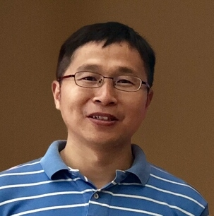

Organizers

Intel Labs

Shanghai JiaoTong University

Intel AI Lab
Friedrich Schiller University Jena
Invited Speakers

Pietro Perona is the Allen E. Puckett Professor of Electrical Engineering at Caltech. He directs Computation and Neural Systems (www.cns.caltech.edu), a PhD program centered on the study of biological brains and intelligent machines. Professor Perona's research centers on vision. He has contributed to the theory of partial differential equations for image processing and boundary formation, and to modeling the early visual system's function. He is currently interested in visual categories and visual recognition.
Jingdong Wang is a Senior Researcher of Microsoft Research Asia. His research focuses on efficient CNN architecture design, human pose estimation, semantic segmentation, image classification, object detection, large-scale indexing, person re-identification, and salient object detection. He has been serving/served as an Associate Editor of IEEE TPAMI, IEEE TMM and IEEE TCSVT, and area chair (or SPC) of some prestigious conferences like CVPR, ICCV, ECCV, ACM MM, IJCAI, and AAAI. He is an ACM Distinguished Member and a Fellow of IAPR.
Subhransu Maji is an Assistant Professor in the College of Information and Computer Sciences at the University of Massachusetts, Amherst and the co-director of the Computer Vision Lab. He obtained my Ph.D. under the supervision of Jitendra Malik from the University of California at Berkeley in 2011, and a B.Tech. in Computer Science and Engineering from IIT Kanpur in 2006. His research is funded by the National Science Foundation, as well as faculty grants from Facebook, NVIDIA, and Adobe.
WWF tech-director TBD.
Advisory Board
Pietro Perona, Professor, Caltech
Lucas Joppa, Chief Environmental Officer, Microsoft
Zhengyou Zhang, Director, Tencent AI Lab
Program Committee Members
Oisin Mac Aodha (Caltech)
Sara Beery (Caltech)
Elizabeth Bondi (University of Southern California)
Anna Bethke (Intel AI Lab)
Kristina Kermanshahche (Perspicace Inc)
Fei Fang (CMU)
Graham Taylor (University of Guelph)
Jiwen Lu (Tsinghua University)
Junliang Xing (CASIA, Chinese Academy of Science)
Shanshan Zhang (Nanjing University of Science and Technology)
Margaux Luck (Mila)
Tilo Burghardt (University of Bristol)
Alexander Freytag (Carl Zeiss AG)
Ergys Ristani (Facebook)
Michael Ying Yang (University of Twente, Netherland)
Ning Xu (Adobe Research)
Xintong Han (Malong Tech)
Shuyuan Li (SJTU)
Staff
Shuyuan Li, Webmaster, SJTU
Taewook Jeong, Local support, Intel Korea
Contact: cvwc2019 AT hotmail.com. Any question related to the workshop such as paper submission, challenge participation, etc, please feel free to send email to the contact mailbox.